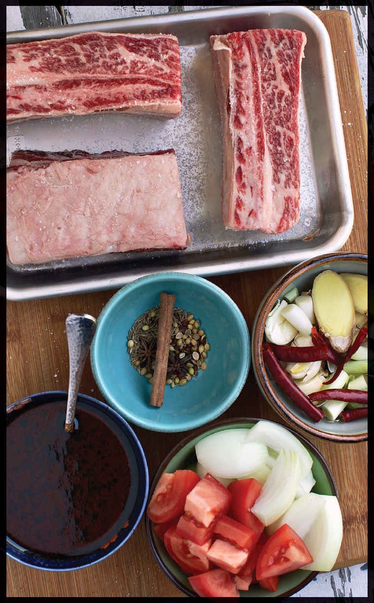

TAIWANESE BRAISED SHORT RIB NOODLE SOUP (HONG SHAO NIU ROU MIÀN)
|
Yield Serves 4 |
Active Time 45 minutes Total Time 3 hours |
If you want to omit some of the spices, I’ve listed them in order of most to least important. At the very minimum you should include the star anise. Another alternative is to use the star anise, along with 2 teaspoons of Chinese five spice in place of the other whole spices. Doubanjiang is a Sichuan fermented broad bean and chile paste. It can be found at better-stocked supermarkets, most Asian markets, or online (the best is from Pixian in the capital city of Chengdu). Ya cai, zha cai, and suan cai are various types of Chinese pickles. You can find them at most Asian markets or online.

Taiwanese beef noodle soup is a red-braised dish with Sichuan origins that has been adapted and adopted as one of the national dishes of Taiwan. Flavored with warm spices, sugar, and fermented broad bean chile paste, it is traditionally made with gelatinous beef shins and tendons, giving the broth a sticky richness. The flavors and technique are perfectly suited for meaty short ribs, which come out meltingly tender and moist.
INGREDIENTS
For the Braising Liquid:
3 tablespoons (12.5 g) dark brown sugar
1 tablespoon (15 ml) water
2 cups (500 ml) homemade or store-bought low-sodium chicken stock or water
1 tablespoon (15 ml) doubanjiang (see Notes)
1 cup (240 ml) Shaoxing wine
3 tablespoons (45 ml) dark soy sauce
2 tablespoons (30 ml) light soy sauce
For the Beef:
3 pounds (1.3 kg) meaty bone-in beef short ribs (about 4 large rib pieces)
Kosher salt
1 tablespoon (15 g) peanut, rice bran, or other neutral oil
For the Aromatics:
8 to 10 medium garlic cloves (25 to 35 g), unpeeled, smashed with the side of a cleaver or knife
One 2-inch knob fresh ginger, cut into rough ¼-inch slices
3 scallions, roughly chopped
3 small hot dried chiles, such as Thai bird or árbol, split open
1 medium yellow onion, roughly chopped
2 Roma tomatoes, roughly chopped
Kosher salt
For the Spices:
2 star anise pods
2 teaspoons (5 g) fennel seeds (optional; see Notes)
2 teaspoons (4 g) coriander seeds (optional; see Notes)
2 teaspoons (4 g) Sichuan peppercorns (optional; see Notes)
2 teaspoons (4 g) black peppercorns (optional; see Notes)
1 cinnamon stick (optional; see Notes)
2 dried bay leaves
To Serve:
2 tablespoons (30 ml) Chinese black or balsamic vinegar
Kosher salt
1 pound (450 g) baby bok choy, Chinese water spinach, Napa cabbage, or other tender greens
1 pound (450 g) fresh Chinese egg noodles or wheat noodles
Chopped preserved ya cai, zha cai, or plain old sauerkraut (see Notes)
Handful of roughly chopped fresh cilantro leaves and fine stems
DIRECTIONS
1 Make the Braising Liquid: Add the sugar to a wok and add the tablespoon (15 ml) of water. Cook over medium heat, stirring frequently, until the sugar melts into a syrup and cooks down to a dark amber color, 3 to 5 minutes total. Add the chicken broth and stir to dissolve the sugar. Stir in the doubanjiang, wine, and soy sauce. Transfer to a bowl and set aside. Wipe out the wok.
2 Sear the Beef: Season the short ribs lightly with salt on all sides. Heat the oil in the wok over high heat until shimmering. Add the short ribs in a single layer and cook, turning occasionally, until well browned on all sides, about 8 minutes total. (Reduce the heat as necessary if the oil smokes excessively during searing.) Transfer the short ribs to a large plate and set aside. Do not wash out the wok.
3 Add the Aromatics: Add the garlic, ginger, scallions, dried chiles, onion, and tomatoes to the wok, season lightly with salt, and cook, stirring frequently, until the vegetables are starting to brown around the edges and the tomatoes are breaking down, about 4 minutes.
4 Bloom the Spices: Add the star anise, fennel seeds, coriander seeds, Sichuan peppercorns, black peppercorns, and cinnamon stick and cook, stirring frequently, until aromatic, about 1 minute.
5 Add the braising liquid to the wok, scraping up any browned bits from the bottom. Return the short ribs to the wok and add enough water to barely cover them (about 2 quarts/2 l—it’s OK if parts of them poke out a little bit). Add the bay leaves, bring the liquid to a boil, adjust the heat to maintain a bare simmer, cover, and cook until a toothpick or skewer inserted into the meaty part of the largest short rib shows very little resistance, but the meat is not falling apart, 2 to 2½ hours.
6 Carefully transfer the short ribs to a plate, then strain the braising liquid through a fine-mesh strainer into a fresh pot and skim off most, but not all, of the fat from the surface with a ladle and discard.
7 Pick any stray spices or aromatics off the short ribs and discard. Return the short ribs to the braising liquid. For best results, allow the short ribs to cool in the liquid on the countertop, then refrigerate overnight.
8 To Serve: Reheat the broth and short ribs to a simmer. Add the vinegar and season the broth with salt to taste. Add the greens and remove from the heat. Bring a large pot of salted water to a boil and cook the noodles according to the package directions. Drain the noodles and divide between 4 serving bowls. Place a short rib on top of each, divide the greens evenly between the bowls, and ladle the broth over the top. Place a small pile of chopped Chinese pickled vegetable or sauerkraut on top of each short rib, sprinkle with chopped cilantro, and serve.